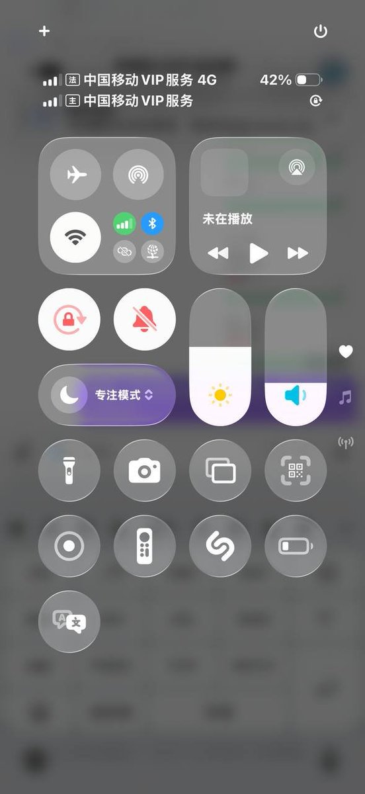
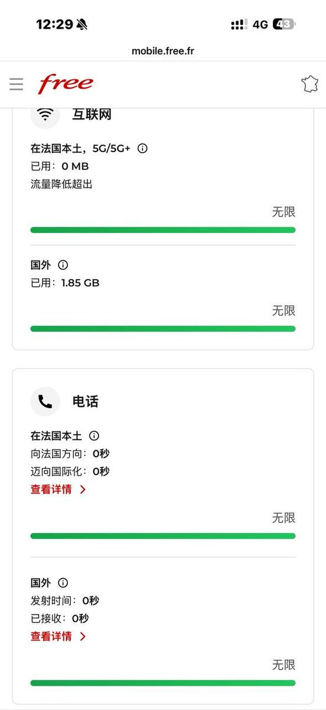
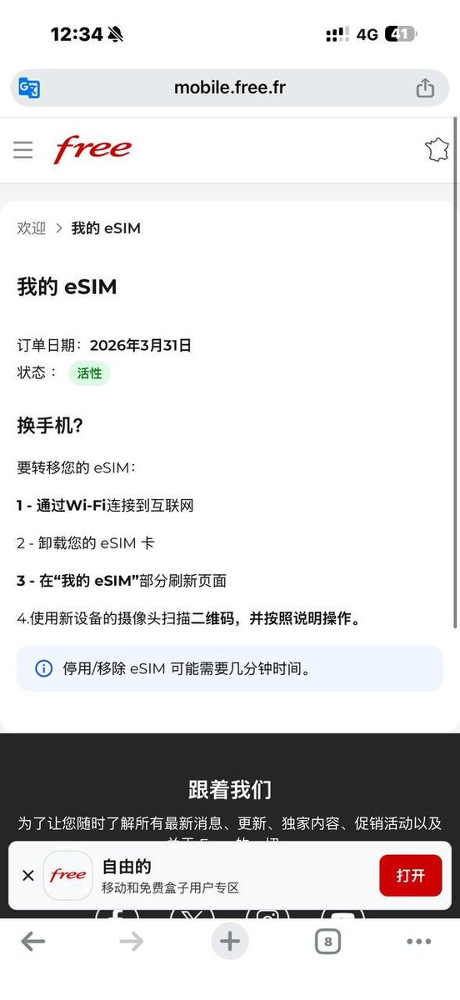
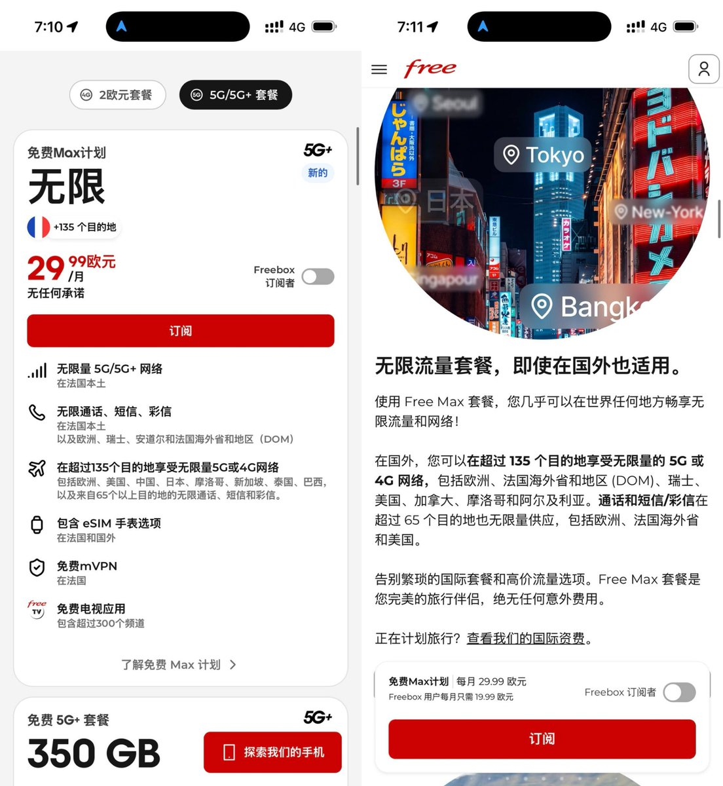
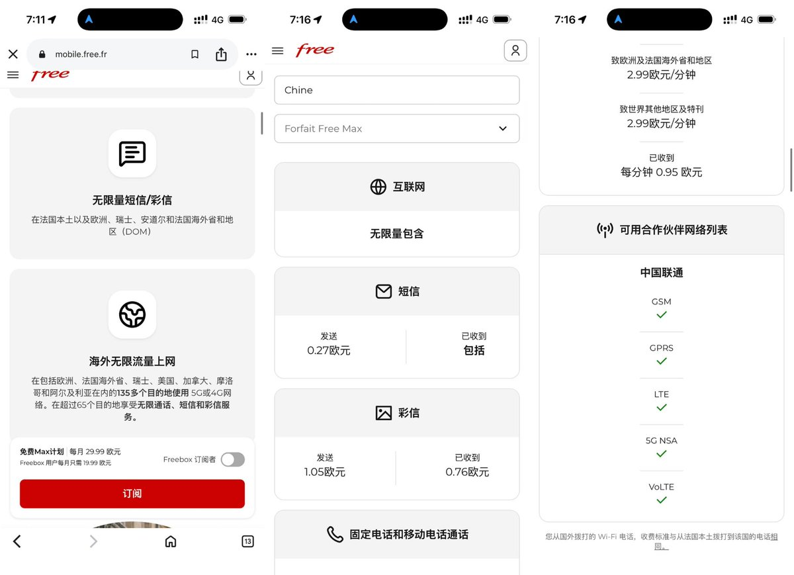
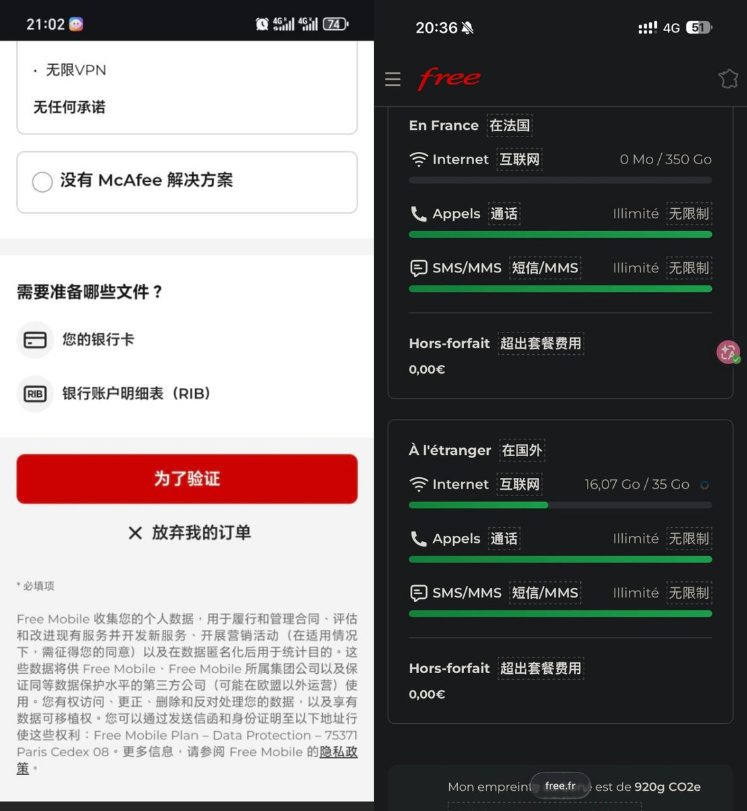

有奶友已经开通Free Max，即每月29.99o享受全球135个地区无限量，在国内漫游移动（CMCC）。
开卡时选eSIM一次性收10o，相当于首月39.99o续费29.99o，基本覆盖主流国家及地区，包括中国、欧洲、北美多国，此外电话和短信也是无限的，暂时没有明确FUP。
有需要可以研究怎么办理，只知道这家销户需要写小作文，若能每个月不到30o（约238元）办理，还是挺划算的。如果有开Wise、N26，应该有IBAN，开户不难，甚至出国都不需要再办卡，法国IP也没啥不可访问的，缺点就是除了欧洲外，延迟基本是200ms以上的待遇。北美和欧洲的号卡基本是这样，就连Google Fi（T-Mobile）也要270-320ms。
不过这类外卡普遍QCI6，AMBR签约速率给的超高。若可以长期漫游，那Free的资费确实比Google Fi更划算，甚至不需要开WiFi通话才免费打电话。总之，就怕Free变卦，不然我把IDD当跨国电话打都能回本了。

开卡时选eSIM一次性收10o，相当于首月39.99o续费29.99o，基本覆盖主流国家及地区，包括中国、欧洲、北美多国，此外电话和短信也是无限的，暂时没有明确FUP。
有需要可以研究怎么办理，只知道这家销户需要写小作文，若能每个月不到30o（约238元）办理，还是挺划算的。如果有开Wise、N26，应该有IBAN，开户不难，甚至出国都不需要再办卡，法国IP也没啥不可访问的，缺点就是除了欧洲外，延迟基本是200ms以上的待遇。北美和欧洲的号卡基本是这样，就连Google Fi（T-Mobile）也要270-320ms。
不过这类外卡普遍QCI6，AMBR签约速率给的超高。若可以长期漫游，那Free的资费确实比Google Fi更划算，甚至不需要开WiFi通话才免费打电话。总之，就怕Free变卦，不然我把IDD当跨国电话打都能回本了。






🇫🇷Free推出Free Max计划，全球135个目的地无限量，支持在中国漫游，每个月29.99o（有订阅Freebox每个月只要19.99o）
理论上有个IBAN就能云开，例如Wise可以验证了，超出套餐费用为0o
就不知道后面会不会更新FUP了，目前来看除了法国延迟高了些。如果是双不限，每个月240左右确实是挺划算的，可以冲！ https://t.co/aDHNnY4R8X
理论上有个IBAN就能云开，例如Wise可以验证了，超出套餐费用为0o
就不知道后面会不会更新FUP了，目前来看除了法国延迟高了些。如果是双不限，每个月240左右确实是挺划算的，可以冲！ https://t.co/aDHNnY4R8X